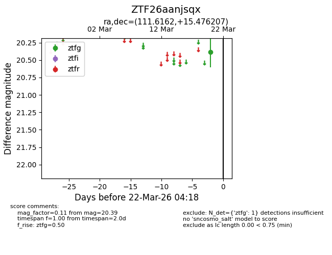
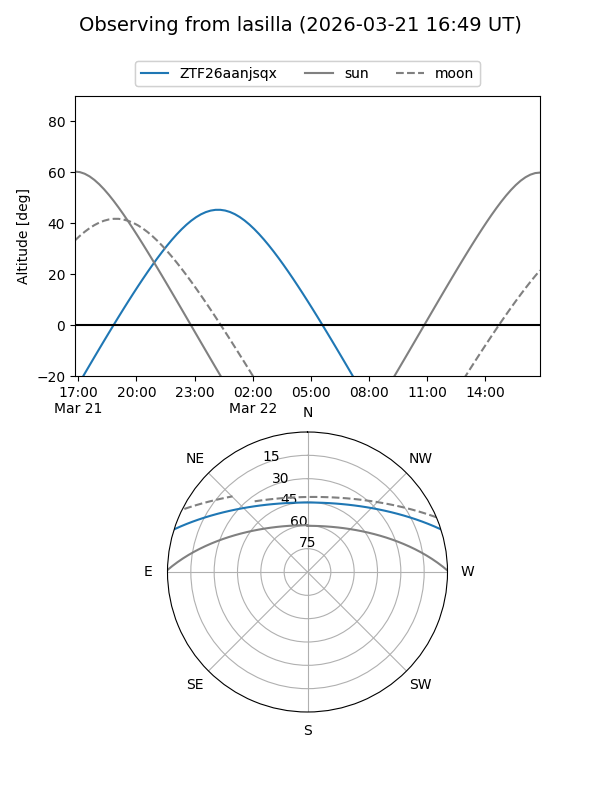
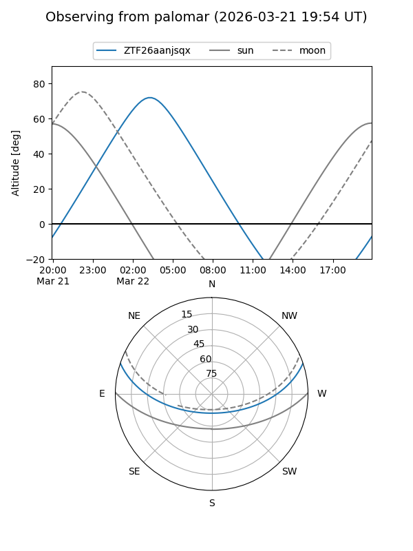

ZTF26aanjsqx
Target ZTF26aanjsqx at 2026-03-22 04:20
Aliases and brokers:
FINK: link
Lasair: link
ALeRCE: link
alt names
ZTF26aanjsqx (ztf,fink_ztf)
Coordinates:
equatorial (ra, dec) = 111.6162,+15.47621
equatorial (HMS+DMS) = 07:26:27.89,+15:28:34.34
galactic (l, b) = (202.7787,+14.61086)
Flags:
Photometry:
last ztfg=20.39
1 ztfg detections
Lightcurve

Visibility


Additional plots